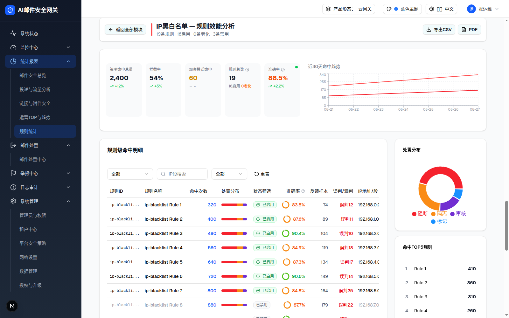
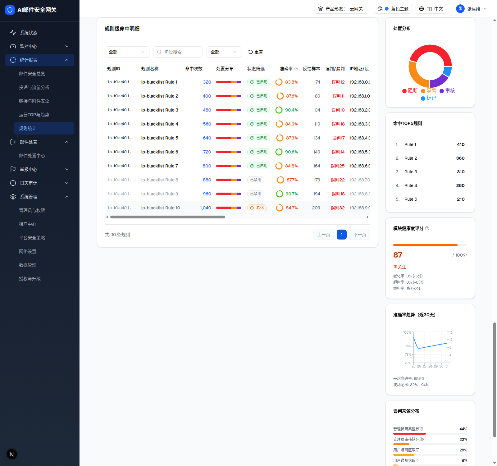
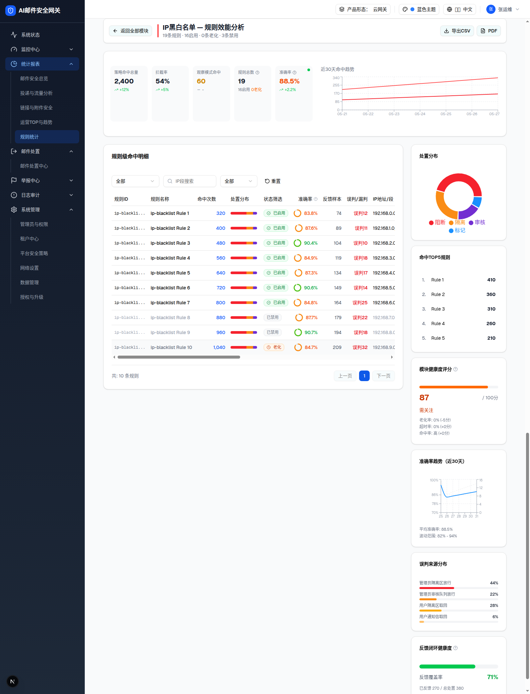

| 所属组件 | 2.6 策略模块效能卡片墙 |
| 主文件 | statistics-rule-stats-v2/index.html |
| 触发路径 | 层级0 任一模块卡片「查看详情」→ viewMode="detail" → 明细视图追加渲染在卡片墙下方（同页，非弹窗/路由）→ 100ms 后平滑滚动定位 |
| demo 源 | module-detail-view.tsx（Props: module{id,nameKey,stage} / onBack / timeRange） |
| 布局 | 返回导航栏 + 模块概览卡（52% KPI×5 + 48% 趋势图）+ 下方 flex（左：规则明细表 flex-1；右：辅助面板 w-72 sticky top-5） |
19条规则 · 16启用 · 0条老化 · 3条禁用
| 元素 | 规格 |
|---|---|
| 返回按钮 | Button(outline sm)「← 返回全部模块」→ onBack()：viewMode="cards"，明细 DOM 移除（浏览器实测 detail_gone=true） |
| 模块色条 | w-1 h-10 圆角竖条，颜色=所属阶段主色（IP黑白名单→#FF4D4F） |
| 标题 | 「IP黑白名单 — 规则效能分析」(text-xl font-bold)；副标题「19条规则 · 16启用 · 0条老化 · 3条禁用」 |
| 右侧按钮 | 「导出CSV」「PDF」两个 outline 按钮，demo 无绑定行为（§9-D11） |

| KPI 迷你卡 | 值（ip-blacklist） | 规则 |
|---|---|---|
| 策略命中总量 | 2,400 · ↗+12% | 变化率硬编码（§9-D10） |
| 拦截率 | 54% · ↗+5% | 同上 |
| 观察模式命中 | 60 · 「-」 | 黄色数值；无变化率（Minus 图标） |
| 规则总数 ❔ | 19（16启用 0老化） | Tooltip：启用: 当前生效的规则数 | 老化: 近90天零命中的启用规则 | 禁用: 已关闭的规则 |
| 准确率 ❔ | 88.5% · ↗+2.2% · 右上角置信度圆点 | 数值色：≥90 绿 / ≥70 橙 / <70 红 / 无样本灰「-」；圆点：高置信(样本≥100)绿 / 中(≥30)橙 / 低灰。Tooltip：反馈闭环口径 + 「基于270条反馈」 |
| 近30天命中趋势 | 7 个数据点（05-21~05-27） | 双 Line：hits=阶段主色、blocked=#F5222D；标题写「近30天」但 mock 仅 7 天数据 |

| 卡片 | 内容（ip-blacklist 实测值） |
|---|---|
| 处置分布 | recharts 环图（innerR45/outerR70）：阻断57%/隔离29%/审核8%/标记6%（value 归一化前 45+12%10 等 mock 公式）+ 底部图例；hover 显示「n%·动作名」 |
| 命中TOP5规则 | 1. Rule 1 410 / 2. Rule 2 360 / 3. Rule 3 310 / 4. Rule 4 260 / 5. Rule 5 220；行 hover 灰底（无点击行为） |
| 模块健康度评分 ❔ | 进度条 + 87/100分「需关注」（≥90绿健康 70-89橙需关注 <70红需优化）+ 扣分明细（老化率 0% (-5分)/超时率/命中率——文案数值硬编码，0% 却 -5 分 §9-D10）；Tooltip：100-(老化占比×50)-(超时率×30)-(零命中占比×20) |
| 准确率趋势（近30天） | 双 Y 轴折线（左：准确率% 70-100 蓝实线；右：样本数 灰虚线），仅取末 7 点渲染；底部「平均准确率: 88.5%」「波动范围: 82% - 94%（硬编码）」 |
| 误判来源分布 | 黑名单类模块：管理员隔离区放行 44% / 管理员审核队列放行 22% / 用户隔离区取回 28% / 用户通知信取回 6%（横向条，红→橙渐次）；白名单类改为「漏判来源分布」（见层级4） |
| 反馈闭环健康度 ❔ | 覆盖率进度条 71%（≥70绿 ≥50橙 <50红+警示行）+「已反馈 270 / 总处置 380」；Tooltip：反馈覆盖率越高准确率越可信。覆盖率<50%时准确率可能存在偏差。 |

| 比对项 | demo 实际 DOM | 提取的 HTML | 是否一致 |
|---|---|---|---|
| 视图根节点 | div#module-detail-view.space-y-6（902 节点） | 按区块拆分嵌入（返回栏 24 + 概览 140 + 右栏 253 + 表格卡 483 节点） | ✅ |
| 返回栏文本 | 返回全部模块 / IP黑白名单 — 规则效能分析 / 19条规则 · 16启用 · 0条老化 · 3条禁用 / 导出CSV / PDF | 同左 | ✅ |
| 概览 KPI 值 | 2,400 · 54% · 60 · 19 · 88.5% | 同左 | ✅ |
| 右栏卡片数 | 6（处置分布/TOP5/健康度/准确率趋势/误判来源/反馈闭环） | 6 | ✅ |
| sticky 定位 | 右栏 class 含 sticky top-5 self-start | 同左（预览容器内不生效，如实保留 class） | ✅ |